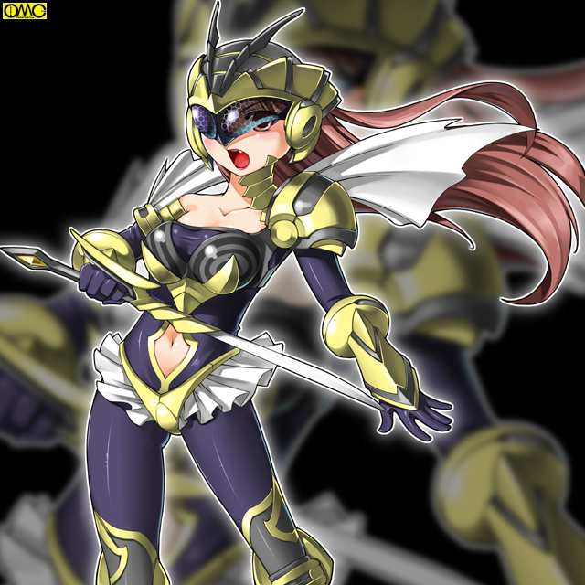

その「女」は深い眠りにあった。
気の遠くなるほどの遠い昔。
かつて自分を大賢者と呼んでいたその集団の先を憂いたあげく諍いとなり共倒れになったその存在。
地中深く埋められ、躯はとうに土に帰っていた。
だがもろい肉体は滅しても高潔な魂は不滅。
「彼女」がかつての同族のように現代人に取り付くにはより高度な条件が要求された。
なにしろ彼女は戦闘民族のその存在意義を否定したために同士に斬られる派目になったのだ。
欲望。破壊衝動でつながるのはたやすい。だが彼女は慈しみの心を条件としていた。
水は低きに流れる。彼女の志に一致する存在はなかなか現れず、未だに眠り続けていた。
かつてアマッドネスの大賢者と呼ばれた存在。その名はスズ。
戦乙女セーラ
ＥＰＩＳＯＤＥ３７「魔笛」
９月。二学期も始まり町に学生がまた溢れてきた。
清良。礼。順たちもそれぞれの学校で新学期を迎えていた。
夏休みの「合宿」の一件から三人は顔をあわせていない。
あの｢仲たがい｣で協力を仰ぐ気になれなかったのと、ひとりで何とかなるような相手が多かったためである。
一番数を残しているセーラだがライノセラスの一件で完全に福真署の特捜班を味方につけ、そのバックアップもあり順調に敵の数を減らしていた。
経験が積み重なり戦いになれてきたセーラと、やっとヨリシロを見つけて取り付いたばかりのアマッドネスでは話にならない。
もし今ここで初陣の相手であるスパイダーアマッドネスと戦ったら汗もかかずに倒すだろう。
ちなみに男を見下していた渡会のり子はとりつかれるという大失態を演じたこと。
そこをセーラに助けられたこと。
そしてアマッドネスと分離した際に傲慢な部分が吹き飛ばされたのが重なり、清良に対して友好的な態度をしてくるようになっていた。
男全体に対する偏見は元からあったらしく消えてはいないが、尊敬できるに値する相手なら男でも敬意を払うようになった。
ましてや清良は女に変身する。単純に普通の男相手より接しやすかった。
それを聞かされた清良の心中はやたらに複雑であったが。
ジャンスやブレイザも先に目覚めた分だけ手馴れている。
そしてのり子の働きかけでそれぞれの所轄の特捜班に戦乙女の存在を知らされ、全面バックアップとまでは行かなくても影ながらサポートくらいはされていた。
一般人を避難させ巻き添えの心配なく戦えるように。さらにはアマッドネスそのものを無人のエリアに誘導したりして戦いやすくしていた。
こちらもそれで多忙であった。なにしろ定期的に行っていた情報交換会も中断している始末。
それもあり三人はしばらく顔をあわせていなかった。
それぞれの学園生活が始まればなおさら疎遠になりそうである。
だがそれは一本の電話でさえぎられた。
休み時間にかかってきた電話。発信相手は一城薫子。
内容は埼玉の山中に怪しい老人がいると。
それは警視庁によりアマッドネスの可能性が高いと目される「Ｂグループ」の一人だった。
Ｂグループ。それは実際にアマッドネスと言う物証も目撃もないものの、状況から見てその可能性が高い人物たちの仮称だった。
もちろんＢに対するＡは怪人として暴れた面々である。
そしてかねてよりその風貌から目に付いていたＢ−７号。
人間としてはプロフェッサー。アマッドネスとしてはギルと呼ばれる存在の目撃例が寄せられていたので連絡があった。
接触している軽部は巧みに変装していたためＢ−５号とはいわれているが軽部とはばれていない。
今まで都内限定で犯行を重ねてきた奴らがなぜか埼玉に。
これは確かめるくらいは必要であろうとの判断である。
屈強な二人の男を従えて「プロフェッサー」は山を昇っていた。
山といってもハイキングに適しているような低いものだ。
しかしローブ姿の老人とスーツ姿のＳＰと思しき男二人は山には異様であった。
「……ここか」
しゃがれた声で不気味な老人はつぶやく。どこか感慨深げである。
「はっ」
左耳にピアスをしたサングラスの黒服が答える。
「ギル様たちのなきがらもこの山に」
「そうだったな。そしてあの忌々しい大賢者もここに埋まっているというな」
老人はひどく苦々しい表情をして吐き捨てるようにいう。
無理もない。かつての自分を斬った相手だ。いわば自分自身の仇。友好的になど出来るはずもない。
「構わん。深く埋まっているならあの裏切り者に我が魔笛が届くとも思えんがな」
ギルが死んでから「大賢者」は「将軍」と相打ちになったのは聞かされている。
当時はミュスアシを侵攻するのを優先したため六武衆の「葬式」は１メートル程度の穴に埋められただけだ。
これは蘇らせる前に野犬などに食われないための『保管』の意味で。
だがその前にクイーンが封じられたので死体は既に土になっている。
裏切り者であるスズはそんな処置をとるつもりもなく、とにかく深く掘って埋められた。
万が一にも蘇生しないようにと言う意味でだ。
彼は興味を失い、改めて場所を丹念に探す。
「ここだな」
雑草すらない不毛の土地。不法投棄された廃棄家電の山。冷蔵庫。洗濯機。家電ではないがまだ走れそうなバイクまである。
まるで墓標のようにごみの山がそびえている。ここはミュスアシ侵攻の前の戦で倒れた下級のアマッドネスたちを生めた場所。
六武衆同様に後に蘇生させる目的で死体を野生動物に食われないように埋めていた。
結局はそれが埋葬という形になった。
「ふふふふ。喜べ。お前ら役立たずどもがやっとクイーンのお役に立てるというわけだ」
二人の大男にではない。「土」に向かっていっている。
老人は横笛を取り出して口に運ぶ。そして奇怪なメロディを奏でる。
そのころ、遠く離れた位置では清良が友紀を後ろに乗せて。
礼がサイドカーのカーゴに森本を乗せて。
ウォーレン・バイクモードを岡元が駆りジャンスが後ろにしがみついて急行していた。
それぞれ所轄の迎えが行くといわれていたが待ってられず。
放課後になるやいなや使い魔たちの変化したビークルで向かっていた。
清良の場合いくら簡単な調査といえど友紀を置いていきたかったが、本人がどうしても同行すると聞かない。
未だに罪の意識が消えていない。そう思った清良は簡単な調査だし薫子もいる。
気の済むようにさせようと同行を許可したのだ。
問題の山が見えてきた。キャロルが走りながら薫子と連絡をとる。そして進路を定める。
同様にしてきたのであろう。ウォーレンの転じたバイクとドーベルの転じたサイドカーが合流して来た。
合流地点はふもとの駐車場。まだ暑いがドライバーは外で待っていた。
長袖のシャツとパンツルック。山と言うこともありスニーカー。女刑事だった。
「薫子さん。こんなにいらねーんじゃないの？」
停車して降りるなり一言いう清良。
確かに単なる調査に戦乙女三人は多い。
「うん。でもなんだかＢ−７号はお供を連れているらしいのよ」
「爺さんのお供なら助さんと格さんだろ」
国民的時代劇に引っ掛けた清良のジョークだが本心のはずがない。
本当にＢ−７号がアマッドネスとしたらその同行者もその危険性が高い。
そうなると確かに一人では手に追えない。
市街地なら警察の機能も十分に発揮できる。
だがいくら小さくても山は山だ。街中同様のバックアップは期待できない。
こうなるとこちらも三人いたほうがいいという薫子の判断だ。
「確かにな。こんなバカが一緒ではいつぞやのプールのように足を引っ張られるだけだ」
「ああ？ てめぇこそ手も足も出てなかったろうよ」
いきなり突っかかる礼。そしてきっちり反応する清良。
冷却期間がまるで役に立ってない。
「二人ともお久しぶりぃ。元気だったぁ？」
ほとんど女の子であるジャンスは気遣いが出来る。険悪な雰囲気になりかけた両者をその笑顔でいさめた。
毒気を抜かれた２人だがそっぽを向く。握手という雰囲気ではない。
「もう。キヨシもけんか腰にならないの」
ちょっとだけ罪悪感を抱く以前の友紀に戻る。
これまた女の子ならではのムードの変え方。
「だってこの野郎が」
「それはこっちの台詞だ。それになんだ。このひどくむかつくメロディは？」
「ああ。それは同感だ。なんかやたらに暴れたくなる」
心なしか清良と礼の目つきも凶悪な感じにとがっていく。
「ハイハイ。それじゃみんな行くわよ」
強制的に薫子がそれを流す。２人の仲の悪さを修復するのはまだ時間がいる。その場はそう思った。
「ああ。その前に森本君と友紀ちゃん。あなた達は危なくなったら逃げて。他の人を逃がしたり県警相手の連絡を頼むわよ」
岡元。森本。そして友紀がそれぞれの相手と強い絆で結ばれているのはわかっている。
さすがにアマッドネスには及ばないまでも十分超人の範疇にはいる岡元。
礼。そしてブレイザの精神的支えになっている森本の同行は仕方ないと思った。
しかし友紀だけは女子と言うこともあり残したかったが、一人だけ残すのも不安。
それに未だに清良に対しての罪の意識が残っているのも薫子は理解していた。
だからその「罪滅ぼし」の一環として同行を認めた。
同性ゆえに気持ちは理解できると言うことらしい。
上空にウォーレン。前方をドーベル。後方をキャロルが固める形で一同は歩いていく。
埼玉の山中。悪魔の儀式は続く。二人の護衛は「気配」を察した。
「ギル様。どうやらねずみが」
「われらが追い払ってまいります」
一心不乱に笛を吹き悪魔の儀式を進行しているギルは返答しない。
しかし腹心二人は心得ていた。
一方の戦乙女チーム。頭を押さえてひどく不機嫌にしている清良と礼。
「会長。頭痛ですか？」
「キヨシ。お薬ならあるよ」
女性ならではの常備薬。鎮痛剤を友紀が見せる。
「いや。そんなんじゃねぇんだよ」
これは清良の返答。
「なんかこの…いやな音がいらいらさせる」
「うむ。確かに辛気臭い笛の音がな」
「まるで呪術というイメージですよね」
そう言う岡元。そして森本だが彼らはけろっとしている。
「ジャンスさんはどうです？」
「あたしもとりあえず平気。二人とも変身したらいいんじゃ？」
なるほどと納得は出来る意見だが二人はそれどころではなかった。
とにかくいらいらして仕方がない。そしてむやみやたらに破壊衝動がつのる。
二人の目が合った。途端に火花が散る。あっという間に喧嘩になる。
「高岩ぁ。俺は前から貴様を斬りたくて仕方なかった。アマッドネスを壊滅させるまでは利用してやるつもりだったが今日はなんだか我慢できん」
「だったらいいぜ。殴りあいならつきあってやる。てめぇをぶんなぐりゃこの気分の悪さも吹っ飛びそうだ」
互いに言いがかりとしかいえないような言い草でののしりあう。
とうとう互いの胸倉をつかむにいたる。
「ああっ。会長。お気を確かに」
「清良もやめて」
「……割といつもと変わらない気がするけど」
空気を読めてないジャンスの一言。
そして二人はつかみあいの喧嘩を始める。
（私の眠りを妨げるのは誰だ……この笛の音は狂将か？）
深い眠りの魂が地上の騒がしさに目を覚ましかけている。
「見つけたぞ。戦乙女ども。このカーサと」
「ギラが貴様らを始末してくれる」
ギルについていた２人のボディガードが守りでなく攻めてきた。やたらに戦意が高い。
「はははは。われらが力を見せてくれる」
カーサと名乗ったほうがいうと２人は黒光りする姿へと転じた。
どうやら甲虫のようだが区別がつかない。同一タイプ？
漆黒の甲冑をまとった騎士。そんな印象。カーサと名乗ったほうは太い槍を。ギラと名乗ったほうは半月刀を両手にもっていた。
「ジャンスは我が槍でしとめる。いいな。ギラ」
「それならあちらの２人はわが双剣で殺す」
「あ。そー言うこと。槍のあなたがカブトムシで、二刀流のあなたがクワガタね。メスだから角やあごが小さくてわかり難かったのね」
相変わらず飄々としているジャンスの口調。
「余裕もそこまでだ」
「だがなぜ貴様は我が主の魔笛に心を乱されん？」
「どうやらこの笛。クイーンのかけらに働きかけるみたいだけど、あたしが一番その影響少ないのよね。おまけに普段からやりたい放題だから２人みたくストレスもないし」
ある一面でいうなら２人は女の姿を仕方なくとっているわけだが順というかジャンスは積極的にとっている。それだけでもストレスは違うだろう。
「そしてあなた達は逆にやる気満々になっているのね。なるほど。それで伊藤さんと高岩さんはあんな好戦的だったのね」
分析して見せるジャンス。にやりと笑うビートルアマッドネスとスタッグアマッドネス。
「そして変身すればそのクイーンのかけらは抑えられる。だからあたしは影響受けないわけね」
すべて見抜いていた。
「頭はいいようだな」
「ならば力ずくだ」
いうなりカーサことビートルアマッドネスは地面にやりを突き刺して掘り起こす。
「危ない」
そのまま 轟音をとどろかせて投げられた土の塊を自分が盾になって防ごうとする岡元だったが、さすがにそれは受け止めきれず背後の森本。友紀。薫子を自分の下敷きにしてしまう。
「きゃあっ」
塊自体は防いだが岡元の下敷きになったのもあり四人とも気絶する。
「はっ？ 俺たちは？」
「何をしていたんだ？」
瞬間的に正気にかえったもののまだ続く笛の音でまた狂気に犯される清良と礼。だが
「そうか！ ウォーレン」
ジャンスが機転を利かせた。ウォーレンを地面に下ろすとバイクへと変化させる。
そして思い切り爆音を。それが魔笛を無効化した。
「今よ。２人とも」
「お、おう」
再び正気に戻った二人はセーラとブレイザに変身する。
「くっ。３対２」
「やむをえん。引くぞ」
いきなり撤退する２怪人。深追いは厳禁というのがセオリーだがまだ魔笛の影響が残っていて戦意が高すぎる。
「キャロル」「ドーベル」
本来なら気を失った四人の護衛に使い魔をつけるはずの所を、自分たちの戦いの手伝いを優先させた。
使い魔達も心配ではあったが逆らえないし、諸悪の根源である魔笛を始末すればと思い従った。
戦乙女たちは２体を追ってこの場から消えた。
ビートルとスタッグを追っていた三人はギルの下にたどり着く。
「見つけたぞ。このやろう」
既に時間が経っているにもかかわらず男の意識のままのセーラ。
「貴様を斬れば済むと言うことだな」
ブレイザも伊藤礼としての意識のままだ。
（そうか。あたしたち戦乙女が男にばかり転生するのはこのかけらのせい。いわばかけらがあたしたちの男としての部分をつかさどっている。今はこの笛のせいで活性化しているから意識が切り替わらないのね）
もともと希薄で影響の少ないジャンスには状況がよく見えている。
「くくくく。既に変身しているか。それではさすがに魔笛の効果も薄いな」
言葉と裏腹に余裕のプロフェッサーことギル。
「ならばわれも姿を変えよう」
両手でローブを持ち上げて前方に一気に引き下げる。
そこには薄汚い老人ではなく虫の異形がいた。
大きな複眼。屹立する触覚。独特の口元。
「バッタ？ いや…違うな」
「キリギリスじゃないかしら？ それでもホッパーだけど」
「それじゃ飛田たちと紛らわしい」
「だったらローカストとでも呼べ」
既に変身して厄介な魔笛は封じたので余裕。それゆえの軽口だった。
「ふふふ。確かにわれはキリギリスの異形。そしてこの姿で奏でる魔笛は先ほどまでとは違うぞ」
ローカストアマッドネスは今度は自身の体から笛の音を繰り出した。
「ぐあっ」「きゃあっ。なにこれ」「心が…心が壊れる」
既に変身して無効化したはずがもっと強力な魔笛によって心が乱される。
反対にカーサとギラはますます戦意を高揚させる。
それが狂将たるゆえんだった。
「闇にうまれし者は闇に帰れ。闇にうまれし者は闇に帰れ」
暗黒へといざなっている。アマッドネスの本能ともいうべき破壊衝動が極限まで高められる。
「高岩ぁぁぁぁ」
「伊藤ぉぉぉぉ」
戦乙女のまま２人は戦闘を開始する。
かろうじてジャンスは正気を保っていたが今度は平静ではいられない。そこにカーサとギラが襲い掛かる。
気を失った４人。その一人に（力を貸そうか？）と「魂」が呼びかける。呼ばれたほうとしては夢の中。まともに思考できない。
（アマ……ッドネス？）
（かつてはな。だがあんな愚か者どもとは縁を切る）
その「女」が向き直る。現代風に言うならストレートロングの涼やかな美人だ。
（私に体を貸してくれ。君になら受け入れてもらえると思う）
（力に……？）
（約束する。大賢者の名にかけて）
（…ならこちらからも頼む……）
（ありがとう）
そしてひとつの肉体と二つの魂が一緒になった。
「ぐ……」
ジャンスはギラの双剣で挟まれていた。まさにクワガタムシ。
「やれ。カーサ」
タッグ専門なのかコンビネーションが抜群である。武功よりも敵の殲滅を優先。止めを譲っている。
「ああ。奴らの首はお前に譲るからな」
気絶して男の姿に戻った清良と礼。クロスカウンターになったのとこの魔的で疲弊していたためあっさりと気を失った。
使い魔達も巻き添えで戦闘不能に。
ジャンス絶体絶命。逃げようにも両腕ごとはさまれて脱出も攻撃も出来ない。
まさに槍がジャンスの心臓を射抜こうかというとき、フェンシングのサーベルの刀身ようなものがギラの胸に刺さる。
ひるんだ隙にジャンスは脱出に成功した。
「何者だ！？」
すべての戦乙女はここにいる。戦士はいないはずだ。
「ひさし振りだな。ギル。相変わらず下手な笛だ。おちおち寝てもいられない」
その「女」は余裕の態度でいう。
「ま、まさか。われはお前まで蘇らせたと言うのか。その顔」
ひどく狼狽している。
「ああ。協力してくれた相手が狙われてはかなわないからね。魔力で自分の顔にさせてもらった」
すっきりとした美人。黒髪をうなじで束ねている。衣装は現代風にライダースーツだ。
彼女は左手をわきにひきつけ、その手首に右手の手首を合わせる。
そのまま反対側に運び、さらに中央に寄せて前方に突き出す。
上を向いていた右手の甲を下に。反対に下を向いていた左手の甲が上に。
その瞬間にメタモルフォーゼが始まる。
顔の上半分を覆う仮面のような物。黄色をベースに黒いラインが走る。
黒い複眼。二本のアンテナ。しかし口だけは露出している。赤い唇が成人女性を思わせる。
胸元にもプロテクター。背中には翅の名残か二枚の白いマフラー。
右手にもったサーベルを高々と掲げると顔の高さに引き下げ横へとなぎ払い名乗りをあげる。
「我が名はスズ。かつては大賢者と呼ばれたもの。そして今はアマッドネスを阻むもの」

このイラストはＯＭＣによって作成されました。
クリエイターのていくあうとさんに感謝！！